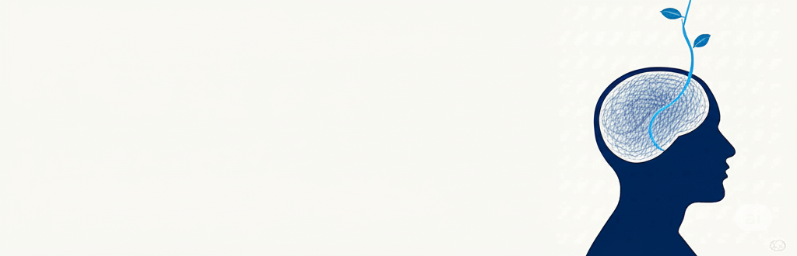

5 Pasos para Vencer la Ansiedad
Una guía práctica para recuperar la calma y el control de tu vida.

Una guía práctica para recuperar la calma y el control de tu vida.
5 Pasos para Vencer la Ansiedad
© 2025 Brenda Contreras
Todos los derechos reservados.
Queda prohibida la reproducción total o parcial de esta obra, por cualquier medio o procedimiento, sin la autorización previa, expresa y por escrito del titular de los derechos de autor.
Nota importante (Descargo de responsabilidad): Esta guía es una herramienta de autoayuda y no reemplaza el consejo o tratamiento de un profesional de la salud mental. La información contenida aquí se proporciona únicamente con fines educativos. Si tu ansiedad es severa o te impide llevar una vida funcional, por favor, considera buscar la ayuda de un psicólogo o terapeuta cualificado. El autor no se hace responsable de las decisiones tomadas por el lector.
Quiero expresar mi más sincero agradecimiento a las siguientes personas, cuya invaluable perspectiva y revisiones han enriquecido enormemente este manual, asegurando que el contenido sea claro, compasivo y útil.
Si estas páginas están en tus manos, es muy probable que conozcas bien el peso de la ansiedad. Tal vez se siente como un nudo en el estómago, un motor que nunca se apaga o una voz en tu cabeza que insiste en que algo malo está a punto de suceder. Sé lo agotador que puede ser.
Pero también sé que es posible cambiar esa realidad. Mi promesa para ti es entregarte 5 pasos prácticos y honestos, basados en técnicas de la Terapia Cognitivo-Conductual (TCC), que funcionan como herramientas reales para entender y manejar tu ansiedad.
Estás a punto de dar el paso más importante: el primero. Vamos a hacerlo juntos.
PASO 1
La ansiedad no es un monstruo invencible; es una reacción de tu cuerpo que puedes aprender a interpretar y manejar. Es la alarma de incendios de tu cuerpo, diseñada para protegerte del peligro. El problema es que, a veces, la alarma es demasiado sensible y se activa sin un fuego real.[1]
Sentir ansiedad puede ser muy solitario, pero es una de las condiciones humanas más comunes. No hay nada "roto" en ti.
Para tomar el control, primero debemos observar. En la siguiente página encontrarás tu primera hoja de ejercicios para comenzar a trazar tu propio mapa.
Usa este espacio para conocer cómo se manifiesta tu ansiedad.
PASO 2
Cuando la ansiedad ataca, secuestra tu cuerpo. Afortunadamente, tienes un poder inmenso para revertir esto: tu respiración. Calmar tu estado físico le envía a tu cerebro la señal de "estamos a salvo".[2]
Esta técnica es tu ancla. Activa el nervio vago y el sistema nervioso parasimpático, el "freno" natural del cuerpo.
La ansiedad vive en el futuro. Este ejercicio te obliga a volver al AHORA. Prepárate para practicarlo en la siguiente página.
Cuando sientas que la ansiedad aumenta, detente y completa esto.
PASO 3
La ansiedad nos cuenta historias catastróficas. La clave es convertirte en un detective amable de tus propios pensamientos, una técnica central de la TCC.[3]
Un pensamiento es solo una idea, no la verdad absoluta. No tienes que creer todo lo que tu mente te dice. Identifica los patrones comunes (distorsiones cognitivas) como el catastrofismo, el "todo o nada" o leer la mente.
La próxima vez que un pensamiento ansioso te atrape, no luches. Llévalo a juicio con las preguntas de la siguiente hoja de ejercicio.
Elige un pensamiento ansioso recurrente y pásalo por este filtro.
PASO 4
La ansiedad crece en la inacción. Cada vez que evitas algo que te da miedo, tu mundo se hace más pequeño.[2] La única forma de romper este ciclo es actuar.
No se trata de saltar de un acantilado. Se trata de construir una escalera y subir, peldaño a peldaño, a tu propio ritmo. Esto le enseña a tu cerebro que eres capaz y que la situación no es tan peligrosa como parecía.
Es hora de construir tu propia escalera del valor. En la siguiente página, identificarás un miedo y lo dividirás en pasos manejables.
Elige una situación que evitas y diséñala en pequeños pasos.
PASO 5
Los primeros cuatro pasos son tu rescate. Este último es tu plan de prevención. Tu bienestar general es tu mejor escudo.
El cambio duradero se construye con pequeños ladrillos. Elige uno, y solo uno, para empezar esta semana.
Elige UN hábito y comprométete a practicarlo esta semana.
La ansiedad es una emoción humana normal, como la alegría o la tristeza. El objetivo no es eliminarla por completo, sino reducir su intensidad y frecuencia para que no controle tu vida. Aprenderás a manejarla, no a erradicarla.
Absolutamente no. La recuperación no es una línea recta. Habrá días mejores y peores. Un mal día es solo eso: un día. Es una oportunidad para practicar tus herramientas, no una señal de fracaso. Sé amable contigo mismo.
No hay un plazo fijo. Algunas personas notan cambios al practicar las técnicas de respiración de inmediato, mientras que desafiar pensamientos y enfrentar miedos lleva más tiempo. La clave es la constancia, no la velocidad.
Si sientes que la ansiedad interfiere significativamente con tu trabajo, tus relaciones o tu capacidad para disfrutar de la vida, o si este manual no es suficiente, buscar la ayuda de un terapeuta es un paso valiente e inteligente. Un profesional puede ofrecerte un plan de tratamiento personalizado.
Has llegado al final, pero en realidad, estás en el principio de un nuevo camino. Ahora tienes las herramientas.
El camino no siempre será una línea recta. Habrá días buenos y malos, y es normal. La clave no es la perfección, sino la práctica constante. Cuando la ansiedad vuelva, no te asustes. Vuelve al paso que necesites. Respira. Cuestiona. Da un pequeño paso.
Has demostrado un coraje inmenso al leer hasta aquí. Ahora, usa estas herramientas para construir, día a día, una vida con más calma, más libertad y más TÚ.
Confía en el proceso y, sobre todo, confía en ti.
El contenido de esta guía se inspira en los principios de la Terapia Cognitivo-Conductual (TCC), una de las formas más efectivas y estudiadas para el tratamiento de la ansiedad. Si deseas profundizar, te recomiendo las siguientes obras:
[1] Bourne, E. J. (2020). The Anxiety and Phobia Workbook. New Harbinger Publications.
Una guía completa y práctica, considerada un clásico en el manejo de la ansiedad.
[2] Leahy, R. L. (2017). The Worry Cure: Seven Steps to Stop Worry from Stopping You. Harmony.
Se enfoca específicamente en cómo manejar la preocupación crónica y el pensamiento ansioso.
[3] Burns, D. D. (1999). Feeling Good: The New Mood Therapy. Avon Books.
Aunque centrado en la depresión, es la obra fundamental para entender y aplicar las técnicas de reestructuración cognitiva que son clave para la ansiedad.